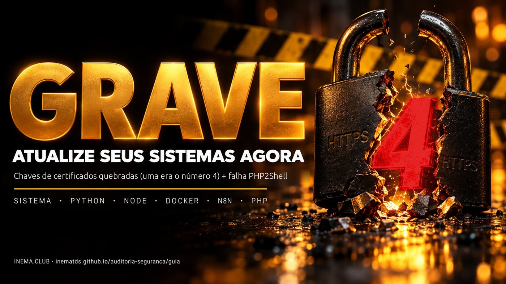

O navegador já te protege. O seu servidor, o seu Python, o seu Node, os seus containers e o seu n8n talvez não. Aqui está como testar de verdade e como corrigir cada camada.

Este é um guia de segurança para quem tem servidor, site, automação ou agente de IA rodando. Em outubro de 2026 vieram duas notícias graves juntas: vazaram as chaves secretas de 8 certificados da certificadora eMudhra (uma delas era literalmente o número 4), e uma falha no PHP, chamada PHP2Shell, deixa invadir sites sem senha. O guia mostra como testar se cada ferramenta ainda está exposta, com um script que só lê e não muda nada, e como atualizar cada camada. Precisa só de um terminal na máquina que você quer conferir.
Uma quebra a confiança do cadeado do HTTPS fora do navegador. A outra abre sites PHP para invasão sem login.
Da certificadora eMudhra, criados numa cerimônia em 30/04/2025: 6 para sites (TLS) e 2 para assinar programas. As cadeias passam pela raiz emSign ECC Root CA – G3 e pela cruzada AAA Certificate Services (Sectigo).
As chaves P-384 deveriam ser números gigantes. Saíram menores que 256: 4, 56, 66, 115, 155, 156, 230 e 237. Qualquer um acha em menos de um segundo. Descoberto em 17/10/2026 pelo pesquisador "Wayne".
Com a chave de uma certificadora confiável dá para emitir um HTTPS "válido" para qualquer site e ficar no meio da conexão. Até 21/10 não havia exploração confirmada, mas as chaves são públicas.
Navegadores: Chrome e Firefox (17/10), Microsoft (20/10), Apple (22/10). Firefox corrigido: 158.0.1 (NSS 3.131.1).
Tudo o que não é navegador e tem lista própria de certificados: curl antigo, Python (certifi), Node, Go, Docker, n8n, agentes de IA, apps Electron, programas em Rust, aparelhos sem atualização.
Duas falhas críticas no PHP (CVE-2026-109618 e CVE-2026-109619) que permitem executar comandos no servidor sem login. Aviso do time do PHP em 21/10/2026.
Toda instalação PHP que atende páginas: PHP-FPM, Apache com mod_php, php-cgi, FrankenPHP e LiteSpeed. Risco maior no mod_php. Inclui a maioria dos sites WordPress.
8.5.12 · 8.4.27 · 8.3.36 · 8.2.35. Detalhes e o que fazer em PHP2Shell.
Os sites de teste abaixo usam certificados das cadeias comprometidas. Se a ferramenta conecta, ela ainda confia nas chaves quebradas. Se dá erro de certificado, está protegida.
curl https://dv-g3b-emudhra.we-have-a-problem.com/ curl https://dv-g3b-aaa-emudhra.we-have-a-problem.com/ # "SSL certificate problem" = protegido # mostrou a página = EXPOSTO
node -e "require('https').get('https://dv-g3b-emudhra.we-have-a-problem.com/',r=>{console.log('EXPOSTO');process.exit()}).on('error',e=>{console.log(/CERT|ISSUER|UNABLE_TO|SELF_SIGNED|DEPTH_ZERO|ERR_TLS/.test(e.code)?'protegido':'SEM TESTE',e.code);process.exit()})" python3 -c "import ssl,urllib.request as u,urllib.error as E try: import certifi; ctx=ssl.create_default_context(cafile=certifi.where()) except ImportError: ctx=ssl.create_default_context() try: u.urlopen('https://dv-g3b-emudhra.we-have-a-problem.com/',context=ctx); print('EXPOSTO') except E.HTTPError: print('EXPOSTO') except Exception as e: print('protegido' if 'CERTIFICATE_VERIFY_FAILED' in str(e) else 'SEM TESTE', e)"
Erro de rede (ENOTFOUND, timeout) não é "protegido". Na dúvida, use o audita.sh.
O audita.sh é para Linux. No Windows (PowerShell) e no macOS (Terminal), o teste rápido é o mesmo curl: curl.exe https://dv-g3b-emudhra.we-have-a-problem.com/ (Windows) ou curl https://dv-g3b-emudhra.we-have-a-problem.com/ (macOS), e o mesmo para a cadeia dv-g3b-aaa-emudhra. Erro de certificado = protegido. Se você tem Node ou Python instalados, rode também os testes acima.
AAA e aceitavam a G3 (ou o contrário). Um teste só pode dar falsa sensação de segurança. E erro de rede (DNS, timeout) não é "protegido": é "sem teste".audita.sh: tudo de uma vez, só leituraEle testa a conexão real com curl, wget, cada Node, Deno e Bun encontrado no disco (inclusive os embutidos em ferramentas), o Python do sistema, cada ambiente Python (venv) com o certifi dele e, por dentro, cada container Docker em execução. Confere a lista do Java (o arquivo cacerts), a versão do PHP no servidor e nos containers (PHP2Shell), o certifi desatualizado e os processos que precisam ser reiniciados. No fim, agrupa o que achou por tipo, com a correção de cada um. Não instala, não altera e não corrige nada.
Regra de ouro: nunca rode script da internet sem olhar o que ele faz. Este tem cerca de 500 linhas, comentadas.
curl -fsSLO https://raw.githubusercontent.com/inematds/auditoria-seguranca/main/audita.sh less audita.sh # leia chmod +x audita.sh
Ou clone o repositório: git clone https://github.com/inematds/auditoria-seguranca.
Sem sudo ele audita o seu usuário (e os containers, se você está no grupo docker). Com sudo ele enxerga também as pastas de outros usuários. A busca no disco leva até 3 minutos; --rapido pula essa parte.
./audita.sh # completo sudo ./audita.sh # inclui containers Docker e outros usuários ./audita.sh --rapido # sem procurar venvs, Node, Deno, Bun e JDKs no disco ./audita.sh --sem-docker # não entra nos containers ./audita.sh --comandos # mostra os comandos de correção (não executa nenhum) ./audita.sh --go # também testa o Go de verdade (veja abaixo)
Dois testes não são de conexão, e o script avisa isso na linha. Java: ele confere se o arquivo de confiança do Java (cacerts) ainda tem as duas raízes, porque testar a conexão exigiria compilar código Java. Go: o teste real compila um programa pequeno numa pasta temporária (cerca de 100 MB, apagada no fim). Como isso grava no disco, só roda com --go.
Com sudo, o Node instalado pelo nvm do seu usuário não fica no caminho padrão; ele ainda é achado pela busca no disco (não use --rapido nesse caso).
== meuservidor · Ubuntu 24.04.3 LTS · 23/10/2026 02:36 · audita.sh 1.1.0 -- versões ca-certificates 20260816ubuntu0.24.04.1 -- conexão real (G3 = cadeia emSign ECC Root CA - G3 · AAA = cadeia cruzada AAA Certificate Services) protegido curl G3 protegido curl AAA EXPOSTO node v24.13.0 /usr/bin/node G3 protegido node v24.13.0 /usr/bin/node AAA versão: ATUALIZE para 24.22.1+ EXPOSTO deno 2.7.14 ~/.deno/bin/deno G3 EXPOSTO venv ~/projetos/app/.venv G3 protegido venv ~/projetos/app/.venv AAA -- Java: lista de confiança (cacerts) — conferida pelo keytool, sem conexão EXPOSTO java /etc/ssl/certs/java/cacerts G3 (lista do keystore, não conexão) -- containers Docker em execução (teste de dentro de cada um) [n8n] n8nio/n8n:2.4.8 EXPOSTO node v20.19.0 G3 [painel-db] adminer:latest EXPOSTO php 8.4.21 PHP PHP2Shell: atualize para 8.4.27+ -- processos a reiniciar (não reinicie no meio de job, upload ou live; escolha a hora) REINICIE pid 3361 meubot.service (sistema) /usr/bin/node dist/index.js o binário foi atualizado depois que o processo começou -- resumo meuservidor: 7 EXPOSTO · 0 SEM TESTE · 0 VERIFIQUE · 1 REINICIE -- o que corrigir, por tipo (conta itens; o resumo acima conta linhas, 2 por item: G3 e AAA) 1 Node ex.: /usr/bin/node (v24.13.0) → sudo apt update && sudo apt install --only-upgrade nodejs 1 Deno ex.: ~/.deno/bin/deno (2.7.14) → ~/.deno/bin/deno upgrade 1 containers de versão fixada (grupo C: subir a versão) ex.: n8n (n8nio/n8n:2.4.8) → versão fixada: puxar a mesma tag não corrige; suba a versão (compose/config) para uma lançada depois de 21/10/2026 1 processos a reiniciar (fora de job, upload ou live) ex.: meubot.service (sistema) → sudo systemctl restart meubot.service
Trecho de exemplo (a saída real tem mais linhas; o script escreve em português). G3 e AAA são os dois "caminhos de confiança" testados: cada certificado de site é assinado por um intermediário, que é assinado por uma raiz que o seu programa confia.
apt changelog <pacote> | grep CVE-2026-109618. Conferido e corrigido? Rode com --php-ok e o VERIFIQUE deixa de segurar a saída.No fim vem o bloco o que corrigir, por tipo: quantos itens de cada tipo, um exemplo e o comando sugerido. O resumo conta linhas (cada ferramenta aparece duas vezes, G3 e AAA); o bloco conta itens. Com --comandos sai a lista completa, um comando por item, para você revisar e rodar um por um. O script nunca executa a correção.
Código de saída: 0 tudo zerado, 1 há EXPOSTO, 2 há teste que não rodou, 3 nada conecta, mas falta reiniciar processos ou conferir o PHP. Dá para usar em monitoramento.
O script vai pelo próprio SSH e roda lá, sem copiar nada para o servidor. Use acesso por chave.
./audita.sh --ssh root@servidor1 --ssh deploy@servidor2 # ou uma lista (um destino por linha; não versione esse arquivo) ./audita.sh --hosts servidores.txt # chave SSH específica (vale para todos os destinos) ./audita.sh --chave ~/.ssh/minha_chave --ssh root@servidor1
A auditoria só termina quando o resumo mostra 0 EXPOSTO · 0 SEM TESTE · 0 VERIFIQUE · 0 REINICIE (saída 0) em todas as máquinas, numa passada completa (sem --rapido). Processo que já estava rodando guarda a lista antiga na memória: atualizar sem reiniciar não resolve.
Cada ferramenta pode ter a própria lista de certificados confiáveis. O ca-certificates do sistema protege o curl e quem usa a lista do sistema. Node, Python com certifi, Go, Electron, Rust e cada container têm a sua.
Antes. Faça backup do que não volta: banco, volumes, a imagem antiga com uma tag de reserva e a configuração. E confira que o sistema está saudável agora, para saber comparar depois.
docker exec meu-postgres pg_dumpall -U postgres > backup-$(date +%F).sql # banco docker tag meuapp:latest meuapp:pre-update # imagem antiga de reserva docker inspect meuapp > meuapp.inspect.json # portas, env, volumes sudo tar czf config-$(date +%F).tgz /etc/nginx /caminho/do/app/.env # configuração curl -fsS https://meusite/health && echo OK # saúde antes docker exec meu-postgres psql -U postgres -d app -c "select count(*) from clientes" # anote os números
Depois. Muita coisa que rodava pode ficar incompatível com a versão nova. Nós vimos uma dependência sem trava quebrar um app, um venv ressincronizar e desfazer a correção, e um proxy guardar o endereço antigo e responder 502. Então teste e valide: o serviço subiu, responde, faz o que fazia e os dados estão lá (mesmas contagens). Só dê por encerrado quando estiver ok e no ar.
| Camada | Versão corrigida | Onde a lista mora |
|---|---|---|
| Ubuntu | 20260816ubuntu0.<versão do Ubuntu> (ex.: 20260816ubuntu0.24.04.1) | sistema |
| Debian | 20250419~deb12u2 (Debian 12) · 20250419+deb13u1 (Debian 13) | sistema |
| Alpine | ca-certificates 20261020-r0 | sistema / containers |
| Python | certifi 2026.10.19 · pip 26.2.2 · uv 0.13.4 | em cada venv |
| Node | 22.23.4 · 24.22.1 · 26.12.1 (Node 20: sem correção) | dentro do binário |
| Go | 1.27.3 · 1.26.10 + recompilar | no Linux, a do sistema (ver passo 4) |
| Java (OpenJDK) | as duas raízes removidas do cacerts (keytool -delete) ou JDK atualizado | arquivo cacerts de cada JDK |
| Deno · Bun | recusaram as duas cadeias no nosso teste: Deno 2.9.8 · Bun 1.4.4 | dentro do binário |
| Firefox / NSS | 158.0.1 · NSS 3.131.1 | navegador |
| Electron | 44.9.1 · 43.8.1 · 42.11.16 | dentro de cada app |
| Rust | rustls-webpki 0.103.16 · webpki-roots 1.0.10 | dentro de cada programa |
| FreeBSD | pendente em 21/10/2026 | — |
# Ubuntu / Debian sudo apt update && sudo apt install --only-upgrade ca-certificates dpkg-query -W ca-certificates # confira a versão # Alpine apk upgrade --no-cache ca-certificates # Fedora / RHEL sudo dnf upgrade ca-certificates
Deixe a atualização automática ligada (unattended-upgrades no Ubuntu/Debian). No nosso caso foi ela que corrigiu o sistema sozinha.
O requests e muitos pacotes usam o certifi, não a lista do sistema. Cada venv tem o seu. O audita.sh lista os desatualizados.
/caminho/do/venv/bin/python -m pip install -U certifi pip python3 -c "import certifi; print(certifi.__version__, certifi.where())" # 2026.10.19 ou mais # ferramentas instaladas com pipx / uv tool pipx upgrade-all # ou: pipx runpip <app> install -U certifi uv self update # uv 0.13.4 ou mais uv tool upgrade --all # ambientes conda (miniconda/anaconda) conda update -n <ambiente> certifi
Atenção ao Python "do sistema": se aparecer EXPOSTO no modo certifi, existe um certifi instalado com pip --user na sua pasta (~/.local/lib/python3.X/). O caminho mostrado pelo comando acima diz qual é. No Ubuntu 24.04 e no Debian 12+ o pip recusa mexer ali ("externally-managed-environment"); como a mudança fica só na sua pasta de usuário, use:
python3 -m pip install --user --break-system-packages -U certifi
O certifi do pacote do sistema (/usr/lib/python3/dist-packages) não precisa disso: no Debian/Ubuntu ele aponta para a lista do ca-certificates.
Venv sem pip (criado pelo uv): o comando -m pip falha. Use o uv apontando para o Python do venv:
uv pip install --python /caminho/do/venv/bin/python -U certifi
uv run: projeto que sobe com uv run ressincroniza o venv pelo uv.lock a cada início e desfaz o certifi novo. Suba o certifi no próprio lock: uv lock --upgrade-package certifi && uv sync. O audita.sh avisa quando o venv tem um uv.lock ao lado.O Node traz a lista de certificados dentro do próprio programa. Atualizar o sistema não muda nada para ele.
# com nvm nvm install 22 && nvm alias default 22 # 22.23.4 ou mais # com o repositório NodeSource (apt): ele é separado por versão. # Se está no 20, troque o repositório para o 22 antes de instalar: curl -fsSLo nodesource_setup.sh https://deb.nodesource.com/setup_22.x less nodesource_setup.sh # leia sudo bash nodesource_setup.sh && sudo apt install -y nodejs # já está no 22 ou 24? basta atualizar sudo apt update && sudo apt install --only-upgrade nodejs node -v
Paliativo para quem não consegue trocar hoje (testado por nós): mandar o Node usar a lista do sistema já atualizada. Só funciona se o ca-certificates estiver corrigido. --use-system-ca não serve: ele soma as duas listas e continuou EXPOSTO no nosso teste.
export NODE_OPTIONS=--use-openssl-ca # no serviço/ambiente do app; depois reinicie
Node baixado do nvm ou do nodejs.org pode não achar a lista do sistema sozinho: se o teste der erro em tudo, acrescente SSL_CERT_FILE=/etc/ssl/certs/ca-certificates.crt e confirme com o audita.sh. NODE_OPTIONS é a variável de ambiente que passa opções para todo Node iniciado ali (no systemd: Environment=NODE_OPTIONS=--use-openssl-ca; no Docker: environment: do compose).
Procure também Node embutido: o Playwright, agentes de IA e apps trazem um Node próprio. O audita.sh acha esses binários no disco; atualize a ferramenta que os trouxe. No caso do Playwright dentro de um venv Python, o Node fica em …/site-packages/playwright/driver/node: atualize o pacote (pip install -U playwright; no npm, npm i playwright@latest) ou use o paliativo NODE_OPTIONS=--use-openssl-ca no serviço que o usa.
Instale Go 1.27.3 ou 1.26.10 e gere o binário de novo (go build). Programas Go de terceiros: atualize para a versão que eles lançarem depois de 21/10.
O que vimos no nosso teste, no Linux: um programa feito com Go 1.26.3 recusou as duas cadeias com a lista do sistema corrigida e conectou quando apontamos para uma lista antiga (SSL_CERT_FILE). Ou seja, no Linux o Go segue a lista do sistema, ou a do container onde roda. Corrigir o ca-certificates já protege boa parte dos programas Go; quem embute a própria lista (pacote x509roots/fallback) ou roda em container com imagem antiga continua exposto. Por isso recompile mesmo assim. Para o teste real: ./audita.sh --go.
O Java não lê a lista do sistema direto: ele usa um arquivo próprio, o cacerts. No Debian/Ubuntu esse arquivo é gerado a partir do ca-certificates, mas pode não ser refeito na atualização. No nosso caso, o sistema já estava corrigido e o cacerts do OpenJDK 8 ainda era de 2025, com as duas raízes dentro.
# onde está o cacerts do Java que você usa readlink -f $(dirname $(readlink -f $(which java)))/../lib/security/cacerts ls /usr/lib/jvm/ # outros JDKs instalados # ainda tem as raízes? keytool -list -keystore /etc/ssl/certs/java/cacerts -storepass changeit | grep -qiE "emsign_ecc_root_ca_-_g3|comodo_aaa" && echo EXPOSTO || echo limpo # Debian/Ubuntu: guarde uma cópia e tire as duas raízes do cacerts sudo cp -a /etc/ssl/certs/java/cacerts /etc/ssl/certs/java/cacerts.bak sudo keytool -delete -alias debian:emsign_ecc_root_ca_-_g3.pem -keystore /etc/ssl/certs/java/cacerts -storepass changeit sudo keytool -delete -alias debian:comodo_aaa_services_root.pem -keystore /etc/ssl/certs/java/cacerts -storepass changeit
update-ca-certificates -f não basta. No nosso teste ele regravou o arquivo, mas as duas raízes continuaram lá, mesmo com o sistema já corrigido. Por isso a remoção é feita à mão, com o keytool -delete acima. Os nomes (debian:…) são os do Debian/Ubuntu; em outro JDK, use o nome que o keytool -list mostrar. Depois rode o teste de novo: tem que dar limpo. O sistema corrigido já tirou essas duas raízes da lista dele (confira: grep -iE "emSign_ECC_Root_CA_-_G3|Comodo_AAA" /etc/ca-certificates.conf mostra as duas com ! na frente, que quer dizer "desconfiar"); o cacerts só ficou para trás. Só remova do Java depois de ver isso. Se algum site parar de abrir num programa Java depois disso, atualize o JDK e o ca-certificates-java em vez de devolver a raiz. Lembre: no Java o audita.sh confere a lista, não faz conexão.JDK com cacerts próprio (baixado à parte, dentro de uma IDE, num /opt): atualize o JDK. changeit é a senha padrão do arquivo, pública; ela só protege contra gravação acidental. Depois, reinicie os programas Java.
Como o Node, os dois trazem a lista embutida. No nosso teste, Deno 2.7.12 e Bun 1.3.13 conectaram; depois de atualizar, Deno 2.9.8 e Bun 1.4.4 recusaram as duas cadeias.
deno upgrade bun upgrade # teste de uma linha (erro de certificado = protegido) deno eval "await fetch('https://dv-g3b-emudhra.we-have-a-problem.com/')" bun -e "await fetch('https://dv-g3b-emudhra.we-have-a-problem.com/')"
Os dois ficam na pasta do usuário (~/.deno, ~/.bun): rode a atualização com o usuário dono, não com sudo.
O container não usa o ca-certificates do servidor. Imagem antiga = lista antiga. A correção depende de como a imagem chegou aí, e o audita.sh já separa os containers expostos nesses grupos (pelo docker inspect, sem mexer em nada).
redis:alpine, nginx:alpine, postgres:16-alpine, …:latest, …:main. O fornecedor troca a imagem por trás da mesma tag: basta puxar e recriar.
Imagem feita com docker build a partir de um Dockerfile seu. Reconstruir do zero pode quebrar o app; o caminho seguro é a camada por cima.
kong:2.8.1, gotrue:v2.197.0. Puxar a mesma tag de novo não muda nada: é preciso subir a versão, e às vezes esperar o fornecedor.
Container sem curl, wget, Node ou Python (ex.: postgres:16 Debian) aparece como "nenhuma ferramenta de rede": o script não tem como testar a conexão. Confira a lista pelo pacote (docker exec <c> dpkg-query -W ca-certificates ou apk list -I ca-certificates-bundle) e compare com a tabela de versões.
docker compose up -d --pull always redis # um serviço; repita para os outros docker compose pull && docker compose up -d # todos de uma vez (veja o aviso sobre bancos abaixo) # prova: o pacote da lista dentro do container (Alpine) docker compose exec redis apk list -I ca-certificates-bundle # 20261020-r0 ou mais
Testando à mão com o wget do busybox (Alpine), a recusa aparece como ssl_client: SSL_connect ou Connection reset by peer, que parece erro de rede. Para ter certeza, teste um site bom com o mesmo wget (wget -O /dev/null https://www.google.com/): se esse abre, a falha do site de teste foi de certificado. O audita.sh já faz essa conferência.
latest ou sem versão principal (postgres:latest, mysql:latest, mongo): o pull pode trazer uma versão principal nova (ex.: Postgres 16 → 18), que não abre o diretório de dados antigo. Antes do pull, fixe a versão principal que você usa hoje (postgres:16-alpine) e faça o pg_dumpall.docker run): salve a receita antes, docker inspect redis > redis.inspect.json, e olhe .Mounts. Sem volume, os dados morrem com o container: no Redis, redis-cli save e docker cp redis:/data/dump.rdb . antes; depois suba o novo com as mesmas portas e variáveis e devolva o arquivo.docker compose up -d <serviço>). O audita.sh mostra esses como "só recriar".:main de 16/10 continuou EXPOSTA depois do pull. Aí use a camada por cima (abaixo) até sair a oficial.Reconstruir com docker compose build --pull baixa a base nova e todas as dependências sem trava de versão. No nosso caso, um app em Node subiu plugins novos e parou de funcionar. A técnica que funcionou: manter a imagem que já roda e só trocar a lista e o Node por cima.
# 1) guarde a imagem atual com outro nome (é o seu caminho de volta) docker tag meuapp:latest meuapp:pre-emudhra # 2) Dockerfile.emudhra FROM meuapp:pre-emudhra USER root # instalar exige root COPY --from=node:22-bookworm-slim /usr/local/bin/node /usr/local/bin/node # só se a imagem tem Node 22; mesma versão principal e mesma distro da base RUN apt-get update && apt-get install -y --only-upgrade ca-certificates && rm -rf /var/lib/apt/lists/* # Alpine: RUN apk add -u ca-certificates ca-certificates-bundle RUN python3 -m pip install -U certifi # se o app tem Python com pip próprio USER app # volte ao usuário original (veja: docker inspect -f '{{.Config.User}}' meuapp:pre-emudhra) # 3) construa por cima e recrie docker build -f Dockerfile.emudhra -t meuapp:latest . docker compose up -d meuapp # deu errado? volte: docker tag meuapp:pre-emudhra meuapp:latest && docker compose up -d meuapp
.node) feitos para o Node 20 não carregam no 22. Imagem em Node 20 não tem como ser corrigida assim; ela precisa ser reconstruída com base 22.pip recusar com externally-managed-environment, o Python é o do sistema da imagem (apt): o ca-certificates atualizado já cobre esse Python. Tire a linha do pip; não use || true, que esconde o erro.node:22-… do COPY tem que ser da mesma família da base (bookworm com Debian 12, alpine com Alpine), senão o binário não roda.uv run: o uv ressincroniza o venv pelo uv.lock e desfaz o certifi novo. Suba o certifi no lock, ou troque só o arquivo cacert.pem do certifi travado pelo da lista nova.KeyError: 'ContainerConfig': docker-compose rm -f -s <serviço> antes do up.node:20 por node:22 (ou 24) no Dockerfile, trave as versões das dependências e reconstrua de verdade (docker compose build --pull).Suba a versão no compose ou na configuração para uma lançada depois de 21/10/2026 e teste de novo. Se o fornecedor ainda não reconstruiu a imagem, não há o que puxar: a espera é por ele.
Supabase local (o da CLI supabase start) é o caso típico: a CLI fixa cada imagem. O caminho é este, nesta ordem:
# 1) backup do banco (com tudo rodando) docker exec supabase_db_<projeto> pg_dumpall -U postgres > supabase-backup.sql # 2) CLI nova + parar e subir (na pasta do projeto; sem --no-backup, que apagaria os dados) npx -y supabase@latest stop && npx -y supabase@latest start # 3) teste de novo ./audita.sh # completo: o --rapido não acha venvs nem quem reiniciar
docker rm): use a CLI.supabase start descarta a sua.start pode subir mais serviços do que antes (no nosso caso, de 4 para 12 containers). Confira a memória da máquina.localhost, a exposição é baixa. Quem faz conexão HTTPS de saída são poucos serviços (autenticação, painel, logs).O n8n roda em Node. Versão antiga = Node antigo dentro do container.
# 1) ache o nome do volume (o compose costuma pôr o nome da pasta na frente) docker volume ls | grep n8n # ex.: meuprojeto_n8n_data # 2) pare o n8n e faça o backup (com ele parado o banco não sai pela metade) docker compose stop n8n docker run --rm -v meuprojeto_n8n_data:/data -v "$PWD":/bk alpine tar czf /bk/n8n-backup.tgz -C /data . # 3) se o compose fixa a versão (image: n8nio/n8n:2.4.8), troque pela atual antes: # image: n8nio/n8n:2.44.6 (ou mais nova; confira as notas de versão) # 4) atualize docker compose pull n8n && docker compose up -d n8n docker compose exec n8n node -v # confirme o Node novo
Sem trocar a tag fixada, o pull traz a mesma imagem e nada muda.
KeyError: 'ContainerConfig' e deixar o n8n parado. Remova o container antigo antes (os dados ficam no volume): docker-compose rm -f -s n8n && docker-compose up -d n8n. Melhor ainda: migre para o docker compose v2.Outros jeitos de guardar os dados: se o n8n usa uma pasta montada (ex.: ./n8n_data ou ~/.n8n), copie a pasta com ele parado; se usa Postgres, faça o pg_dump do banco. Em todos os casos guarde junto a chave de criptografia (N8N_ENCRYPTION_KEY ou o arquivo config da pasta do n8n): sem ela as credenciais salvas não voltam.
Depois de atualizar, olhe o log (docker compose logs n8n). Saltos grandes de versão podem trazer avisos novos, como o do executor de Python do nó Code.
cargo update -p rustls-webpki -p webpki-roots e recompile.Programa que já está rodando segurou a lista antiga na memória: atualizar sem reiniciar não resolve. Bots, APIs, workers, agentes, o n8n e qualquer servidor Python com venv (uvicorn, gunicorn) precisam reiniciar depois da correção. O audita.sh lista na seção processos a reiniciar quem ainda roda com o programa antigo (o Node foi trocado depois que o processo começou) ou começou antes do certifi novo do venv dele.
# à mão: processos Python de venv e Node, com o tempo de execução em segundos ps -eo pid,etimes,args | grep -E "venv/bin/python|/node " | grep -v grep # serviços que estão rodando systemctl list-units --type=service --state=running systemctl --user list-units --type=service --state=running pm2 list # reinicie sudo systemctl restart <servico> # serviços do sistema systemctl --user restart <servico> # serviços do seu usuário pm2 restart all # apps Node gerenciados pelo pm2 (pm2 update reinicia o próprio pm2) docker compose up -d # containers: recria com a imagem nova
Na lista do script, cada processo vem com o que reiniciar: (sistema) é sudo systemctl restart, (--user) é systemctl --user restart, e processo avulso é algo que você abriu no terminal, no tmux ou no pm2: reinicie só aquele programa.
user@1000.service (ou outro número): é a sessão inteira do usuário. Derruba terminais, tmux, jobs e uploads de uma vez.Atenção: docker compose restart só reinicia o mesmo container, com a imagem velha. Depois de pull ou build, o certo é docker compose up -d.
E rode o audita.sh de novo.
Atualizou? Confira, serviço por serviço: subiu (docker compose ps, systemctl status), responde (curl -fsS https://meusite/health), faz o que fazia (abra, faça login, rode um fluxo) e os dados estão lá (as mesmas contagens de antes). Deu errado: volte com a imagem de reserva (docker tag meuapp:pre-update meuapp:latest && docker compose up -d meuapp). Atenção: se a versão nova já migrou o banco (n8n, Postgres, apps com migração), a imagem antiga não abre o banco migrado: aí a volta é restaurar o backup do volume ou o dump junto com a imagem antiga. Em salto grande de versão, teste antes numa cópia do volume. E rode o audita.sh de novo. Só termina quando estiver ok e no ar.
Na madrugada de 23/10/2026 auditamos 6 servidores com este método. Sem nomes nem endereços: o que importa é o padrão.
O ca-certificates dos 6 servidores já estava corrigido pela atualização automática. O curl recusava as cadeias ruins.
Node, ambientes Python (certifi) e containers, inclusive o n8n, seguiam confiando nas chaves quebradas.
O n8n não subiu depois do pull: o docker-compose 1.29 deu KeyError 'ContainerConfig' com a imagem nova e o serviço ficou parado por uns minutos. Resolveu remover o container antigo antes do up.
Um nginx em container montava a configuração de um arquivo em /tmp. A limpeza do /tmp transformou o caminho numa pasta vazia, e ao recriar o container o nginx não subiu. Configuração montada tem que morar numa pasta permanente.
No mesmo dia rodamos o audita.sh na máquina de trabalho, a que tem dezenas de projetos, ambientes Python e containers locais. O sistema e o curl estavam protegidos. O resto não: 134 linhas EXPOSTO. Corrigindo camada por camada, caiu para 70 e depois sobrou só o que dependia de fornecedor. O que aprendemos, na ordem em que apareceu:
cacerts do OpenJDK 8 era de 2025 e ainda tinha as duas raízes, com o sistema já corrigido. update-ca-certificates -f regravou o arquivo, mas as raízes ficaram: foi preciso tirar as duas com keytool -delete.deno upgrade e bun upgrade resolveram.pip --user na pasta do usuário passava na frente do certifi do sistema e deixava o "python3 do sistema" EXPOSTO.uv pip install --python ….uv run desfaziam a correção a cada início, pelo uv.lock.:pre-emudhra..bak) esquecida depois da troca de versão: não rodava, mas é o tipo de sobra que alguém executa por engano. Apague cópias antigas que não usa. O padrão de tudo isso é um só: quem não é o sistema fica para trás.Aviso do time do PHP de 21/10/2026: duas falhas críticas permitem executar código no servidor sem login. A falha está no PHP, antes do WordPress ou de qualquer aplicação abrir a página. Plugin de segurança não segura.
CVE-2026-109618: o tratamento de falta de memória interrompe o PHP com dados da requisição pela metade, e a limpeza trata esses dados como válidos.CVE-2026-109619: um estado interno da requisição sobrevive depois de a memória ser liberada, e a requisição seguinte do mesmo processo usa esse estado velho.Shopify, Wix, Squarespace: o PHP é responsabilidade da empresa. Confira o aviso de segurança da plataforma; se não achar, pergunte ao suporte.
Teste o site (passo abaixo) e veja a versão do PHP no painel da hospedagem. Abaixo da versão corrigida: peça ao provedor para atualizar hoje.
É com você e é urgente: ataques começaram antes mesmo de a correção sair. Atualize, reinicie e procure sinais de invasão.
A OpenAI publicou o php2shell-checker (licença Apache 2.0). Ele lê a versão que o site anuncia nos cabeçalhos; não manda ataque. Precisa de git e Node instalados no seu computador (não no servidor).
git clone https://github.com/openai/php2shell-checker && cd php2shell-checker node phpcheck.js "https://seusite.com.br" # OK (0) · POTENTIALLY VULNERABLE (1) · UNKNOWN (3)
Ou peça ao seu agente (Claude Code, Codex): "rode o php2shell-checker só contra o meu site e me explique o resultado". UNKNOWN não é sinal verde: o site esconde a versão; confira no painel ou no servidor.
php -v php-fpm8.3 -v # ajuste o número da versão apt changelog php8.3-fpm | head -30 # Debian/Ubuntu: procure CVE-2026-109618 # PHP dentro de containers (painéis, WordPress, adminer, phpMyAdmin) for c in $(docker ps --format '{{.Names}}'); do echo "$c: $(docker exec $c php -v 2>/dev/null | head -1)"; done
Não esqueça os containers: imagem com PHP antigo é tão vulnerável quanto o servidor, e painéis de banco costumam ficar expostos numa porta. O audita.sh já mostra a versão do PHP de cada container e do servidor e compara com as corrigidas (EXPOSTO abaixo delas; VERIFIQUE quando o número é de pacote da distribuição). Para corrigir: puxe a imagem nova e recrie o container (grupo A da seção Docker).
sudo apt update apt list --upgradable 2>/dev/null | grep -i php # veja o que vai mudar sudo apt install --only-upgrade $(dpkg -l 'php*' | awk '/^ii/{print $2}') # só os pacotes PHP instalados sudo systemctl restart php8.3-fpm # ou apache2, se usa mod_php
Usa o repositório PPA ondrej/php (comum para ter várias versões)? Ele também precisa estar com a versão corrigida; confira com php -v depois. mod_php é o PHP rodando dentro do Apache; PHP-FPM é o PHP como serviço separado, usado com nginx ou Apache.
O próprio time do PHP avisa: estas medidas reduzem caminhos de ataque conhecidos, não tornam a instalação segura. Só a atualização resolve. Aplique no php.ini, no pool do FPM ou na configuração do servidor (não em ini_set() nem .user.ini) e reinicie todos os workers.
# no pool do FPM (ex.: /etc/php/8.3/fpm/pool.d/www.conf), que a aplicação não consegue mudar: php_admin_value[memory_limit] = -1 php_admin_value[post_max_size] = 8M # 32M se o site precisa de upload php_admin_value[upload_max_filesize] = 6M # sempre abaixo do post_max_size php_admin_flag[session.upload_progress.enabled] = off # só no PHP 8.5: php_admin_flag[fatal_error_backtraces] = off
memory_limit = -1 (contra a CVE-2026-109618) tira o limite de memória do PHP. Isso fecha o caminho de ataque, mas um script com defeito pode consumir toda a RAM do servidor. Por isso o time do PHP recomenda pôr um limite fora do PHP: o limite de memória do container (Docker) ou do serviço (cgroup, no systemd MemoryMax=), de preferência derrubando só o processo afetado.RLIMIT_AS/RLIMIT_DATA (limites de memória do ulimit) no lugar disso: eles podem provocar justamente a falha de memória vulnerável.session.upload_progress.enabled e fatal_error_backtraces desligados (contra a CVE-2026-109619) bloqueiam só os caminhos confirmados, não outras variantes.# arquivos .php criados ou mudados nos últimos 7 dias dentro do site find /var/www -name '*.php' -mtime -7 -ls # .php dentro da pasta de uploads do WordPress (lá não deveria haver nenhum) find /var/www -path '*wp-content/uploads*' -name '*.php' -ls # tarefas agendadas que você não criou crontab -l; sudo crontab -l -u www-data; ls -la /etc/cron.* # acessos recentes e usuários novos last -20; tail -5 /etc/passwd wp user list --role=administrator --path=/var/www/seusite # WP-CLI; como root, acrescente --allow-root
Achou algo que você não criou: tire o site do ar, troque senhas e chaves, restaure de um backup anterior à invasão.
A inteligência artificial está achando falhas antigas cada vez mais rápido. A defesa é rotina, não susto.
curl | bashcurl ... | bash roda código da internet com o seu usuário. Baixe primeiro, leia, e só então rode.sha256sum arquivo) ou a assinatura publicada pelo projeto.package-lock.json, requirements.txt com versão, imagem Docker com tag) e atualize de propósito, não por acaso../audita.sh em todas as máquinas: resumo zerado.Todo certificado emitido fica num registro público (Certificate Transparency). Procure seu domínio no crt.sh e veja se apareceu certificado que você não pediu. Um registro CAA no DNS diz quais certificadoras podem emitir para o seu domínio.
dig CAA seudominio.com.br +short--pull: imagem velha em cache traz lista velha.audita.sh como etapa do deploy; saída 1 ou 2 barra o deploy (3 pede reinício)..env fora do repositório); se uma chave vazou, troque, não só apague.Empresa que assina os certificados HTTPS. É o "cartório" que diz: este site é mesmo quem diz ser.
A raiz é a assinatura-mãe que o seu programa confia. Ela assina intermediários, que assinam os sites. A sequência é a cadeia. As chaves vazadas são de intermediários.
Tipo de chave por curva elíptica. Uma chave P-384 boa é um número com mais de 100 dígitos; as da eMudhra eram menores que 256.
Pacote do Linux com a lista de certificadoras confiáveis do sistema. Usado pelo curl, wget e muitos programas.
Pacote Python com uma lista própria de certificadoras. O requests usa ele, não a do sistema.
Ambiente Python isolado de um projeto, com os próprios pacotes (e o próprio certifi).
Uma "máquina" leve dentro do servidor, com sistema e lista de certificados próprios. Imagem antiga = lista antiga.
Gerenciadores que mantêm programas rodando no servidor e os reiniciam.
Arquivo onde o Java guarda as certificadoras em que confia. Cada JDK pode ter o seu; o keytool mostra o que tem dentro.
O nome depois dos dois pontos na imagem Docker. Flutuante (latest, alpine) muda de conteúdo com o tempo; fixada (2.8.1) não muda nunca.
Quando uma certificadora também é assinada por outra raiz mais antiga, para funcionar em aparelhos velhos. Aqui: a cadeia da eMudhra também passa pela raiz AAA Certificate Services.
Conjunto mínimo de comandos (sh, wget…) usado em imagens pequenas como Alpine. O wget dele mostra erros diferentes do wget comum.
Número público de uma falha de segurança, usado para procurar a correção (ex.: CVE-2026-109618).